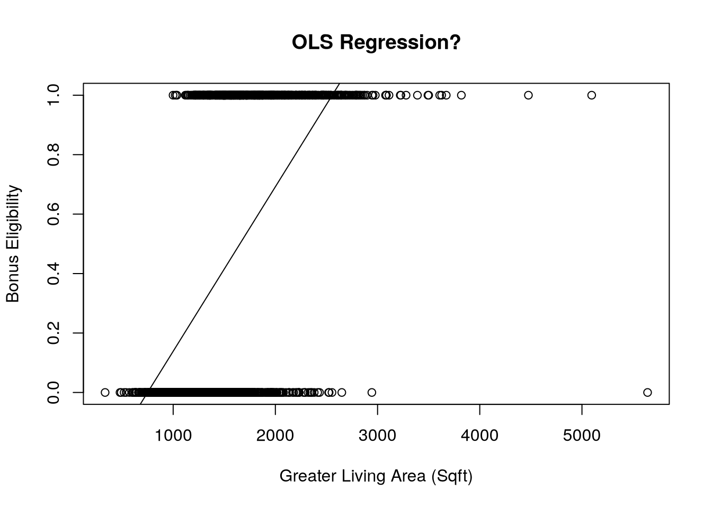
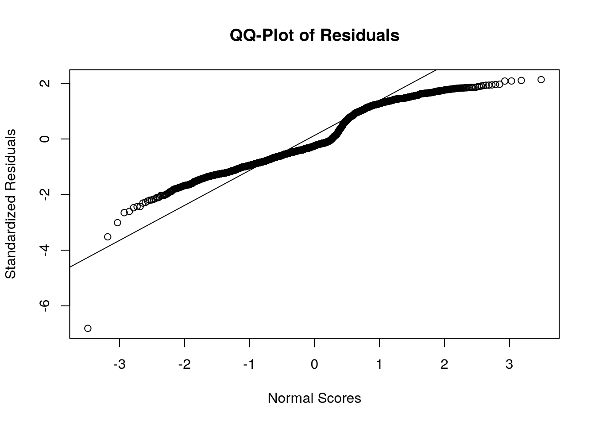
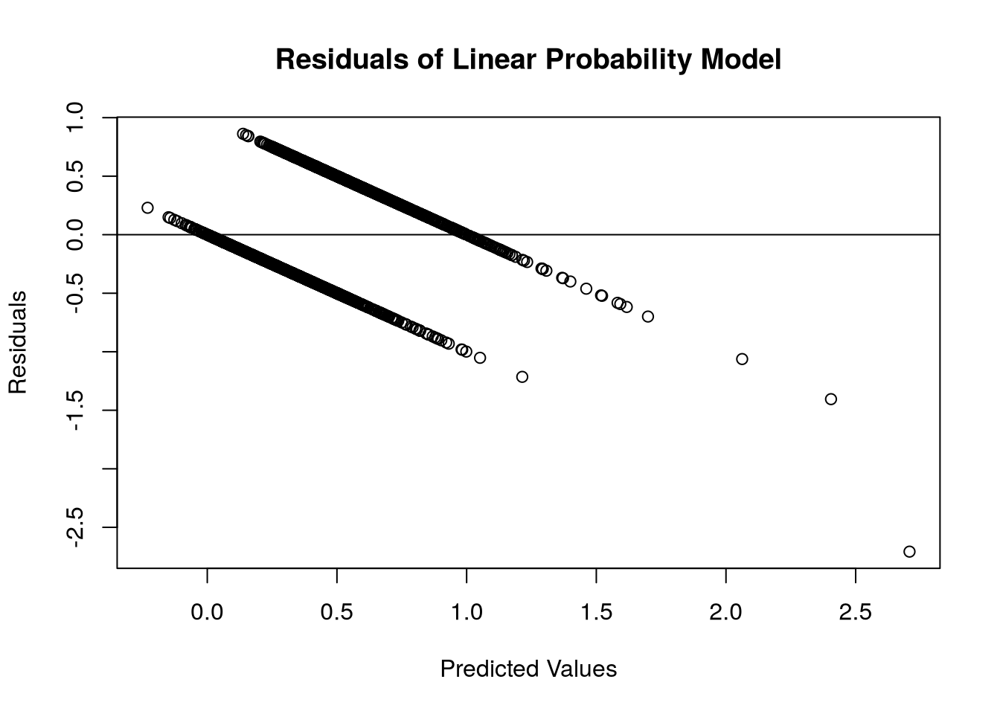
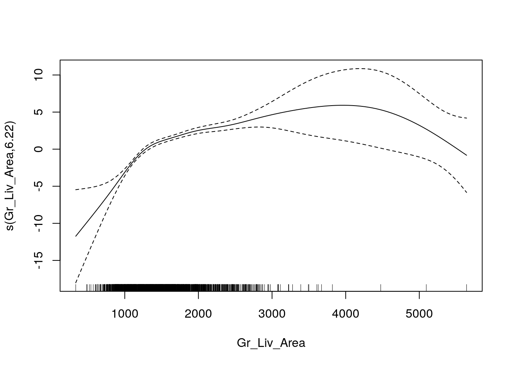
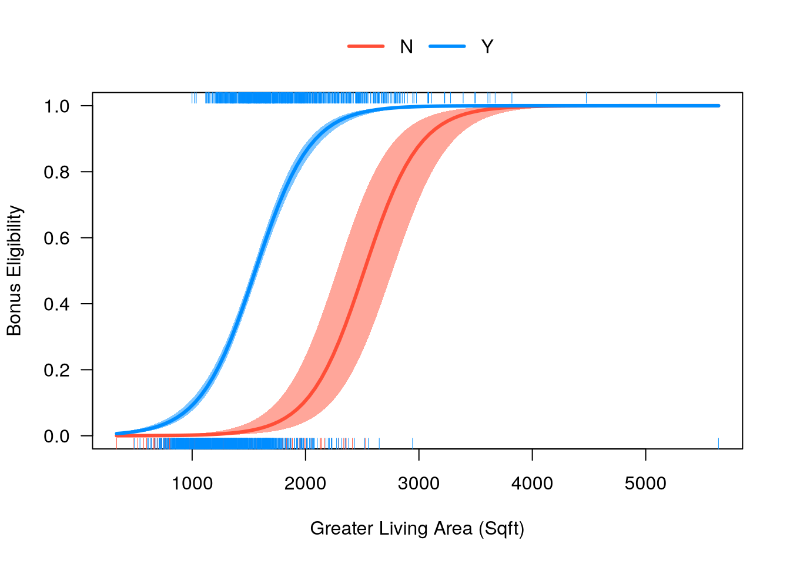

library(AmesHousing)
library(tidyverse)
library(car)
library(mgcv)
library(visreg)Binary Logistic Regression
ames <- make_ordinal_ames() %>%
mutate(Bonus = if_else(Sale_Price > 175000, 1, 0))
set.seed(123)
ames <- ames %>%
mutate(id = row_number())
train <- ames %>%
sample_frac(0.7)
test <- anti_join(
ames, train, by = "id"
)Linear Model
Not widely used since probabilities don’t tend to be linear inrelation to their predictors, and models can produce predictions outside of the bounds of 0 and 1.
But let’s do it anyway.
lp_model <- lm(Bonus ~ Gr_Liv_Area, data = train)
with(
train,
plot(
x = Gr_Liv_Area, y = Bonus,
main = "OLS Regression?",
xlab = "Greater Living Area (Sqft)",
ylab = "Bonus Eligibility"
)
)
abline(lp_model)
summary(lp_model)
Call:
lm(formula = Bonus ~ Gr_Liv_Area, data = train)
Residuals:
Min 1Q Median 3Q Max
-2.70766 -0.29160 -0.09983 0.39432 0.86198
Coefficients:
Estimate Std. Error t value Pr(>|t|)
(Intercept) -4.149e-01 2.776e-02 -14.94 <2e-16 ***
Gr_Liv_Area 5.534e-04 1.765e-05 31.36 <2e-16 ***
---
Signif. codes: 0 '***' 0.001 '**' 0.01 '*' 0.05 '.' 0.1 ' ' 1
Residual standard error: 0.4044 on 2049 degrees of freedom
Multiple R-squared: 0.3243, Adjusted R-squared: 0.324
F-statistic: 983.6 on 1 and 2049 DF, p-value: < 2.2e-16qqnorm(rstandard(lp_model),
ylab = "Standardized Residuals",
xlab = "Normal Scores",
main = "QQ-Plot of Residuals")
qqline(rstandard(lp_model))
plot(predict(lp_model), resid(lp_model),
ylab="Residuals", xlab="Predicted Values",
main="Residuals of Linear Probability Model")
abline(0, 0)
As we can see from the charts above, the assumptions of ordinary least squares don’t really hold in this situation. Therefore, we should be careful interpreting the results of the model.
Binary Logistic Regression Model
The outcome of the logistic regression model is the probability of getting a 1 in a binary variable, \(E(y_i) = P(y_i = 1) = p_i\). That probability is calculated as follows:
\[ p_i = \frac{1}{1+e^{-(\beta_0 + \beta_1x_{1,i} + \cdots + \beta_k x_{k,i})}} \]
And follows a logistic curve.
The logit link function for logistic regression
\[ logit(p_i) = \log(\frac{p_i}{1-p_i}) = \beta_0 + \beta_1x_{1,i} + \cdots + \beta_k x_{k,i} \]
Does not used ordinary least squares for coefficients because of the lack of residuals. The target variable is binary, but the predictions are probabilities. The Maximum likelihood estimation is used instead of residuals. It maximizes the probability that the \(\beta\) values produce the data.
logit_model <- glm(Bonus ~ Gr_Liv_Area + factor(Central_Air),
data = train, family = binomial(link = "logit"))
summary(logit_model)
Call:
glm(formula = Bonus ~ Gr_Liv_Area + factor(Central_Air), family = binomial(link = "logit"),
data = train)
Coefficients:
Estimate Std. Error z value Pr(>|z|)
(Intercept) -1.035e+01 6.422e-01 -16.12 < 2e-16 ***
Gr_Liv_Area 4.112e-03 1.962e-04 20.96 < 2e-16 ***
factor(Central_Air)Y 3.952e+00 5.180e-01 7.63 2.35e-14 ***
---
Signif. codes: 0 '***' 0.001 '**' 0.01 '*' 0.05 '.' 0.1 ' ' 1
(Dispersion parameter for binomial family taken to be 1)
Null deviance: 2775.8 on 2050 degrees of freedom
Residual deviance: 1808.8 on 2048 degrees of freedom
AIC: 1814.8
Number of Fisher Scoring iterations: 6Perform a Likelihood Ratio Test to see if any variables are significant overall.
logit_model_r <- glm(Bonus ~ 1,
data = train, family = binomial(link = "logit"))
anova(logit_model, logit_model_r, test = "LRT")Analysis of Deviance Table
Model 1: Bonus ~ Gr_Liv_Area + factor(Central_Air)
Model 2: Bonus ~ 1
Resid. Df Resid. Dev Df Deviance Pr(>Chi)
1 2048 1808.8
2 2050 2775.8 -2 -966.96 < 2.2e-16 ***
---
Signif. codes: 0 '***' 0.001 '**' 0.01 '*' 0.05 '.' 0.1 ' ' 1The above code creates a second model without any variables. It then performs a Likelihood Ratio Test (LRT) on this model compared to the original model. The results of this test show the usefulness of all the variables.
logit_model_f <- glm(Bonus ~ Gr_Liv_Area + factor(Central_Air) + factor(Fireplaces),
data = train, family = binomial(link = "logit"))
car::Anova(logit_model_f, test = "LR", type = "III")Analysis of Deviance Table (Type III tests)
Response: Bonus
LR Chisq Df Pr(>Chisq)
Gr_Liv_Area 565.89 1 < 2.2e-16 ***
factor(Central_Air) 86.81 1 < 2.2e-16 ***
factor(Fireplaces) 62.61 4 8.181e-13 ***
---
Signif. codes: 0 '***' 0.001 '**' 0.01 '*' 0.05 '.' 0.1 ' ' 1car::Anova performs a LRT comparing a model with and without a variable, leaving every other variable in. LR gets the LRT, type 3 means the test only drops that specific variable when comparing to the full model. The two models are significantly different (based on our significance level) which implies that the Fireplaces variable (the only difference between comparing a model with and without the Fireplaces variable) is significant as a whole.
Calculate the odds ratios for each variable.
exp(cbind(coef(logit_model), confint(logit_model)))Waiting for profiling to be done... 2.5 % 97.5 %
(Intercept) 3.184558e-05 8.233966e-06 1.041852e-04
Gr_Liv_Area 1.004121e+00 1.003745e+00 1.004517e+00
factor(Central_Air)Y 5.203450e+01 2.058035e+01 1.620722e+02This tells us that homes with central air are 52 times as likely (in terms of odds) of being bonus eligible, on average, then homes without central air. Every additional square foot of living area leads to the home being 1.004 times as likely to be bonus eligible.
Testing Assumptions
Logistic regression assumes the continuous predictor variables are linearly related to the logit function. The is checked with Generalized Additive Models (GAMs).
\[ \log(\frac{p_i}{1-p_i}) = \beta_0 + f_1(x_1) + \cdots + f_k(x_k) \]
GAMs use spline functions for estimation. If a straight line is not could one could:
- Use the GAM representation of the logistic regression model. It is less interpretable.
- Bin the continuous variables and treat them as ordinal.
gam is like glm but uses splines instead of lines.
fit_gam <- mgcv::gam(Bonus ~ s(Gr_Liv_Area) + factor(Central_Air),
data = train, family = binomial(link = "logit"),
method = "REML")
summary(fit_gam)
Family: binomial
Link function: logit
Formula:
Bonus ~ s(Gr_Liv_Area) + factor(Central_Air)
Parametric coefficients:
Estimate Std. Error z value Pr(>|z|)
(Intercept) -4.4616 0.5033 -8.864 < 2e-16 ***
factor(Central_Air)Y 3.4882 0.4911 7.103 1.22e-12 ***
---
Signif. codes: 0 '***' 0.001 '**' 0.01 '*' 0.05 '.' 0.1 ' ' 1
Approximate significance of smooth terms:
edf Ref.df Chi.sq p-value
s(Gr_Liv_Area) 6.221 7.232 380.4 <2e-16 ***
---
Signif. codes: 0 '***' 0.001 '**' 0.01 '*' 0.05 '.' 0.1 ' ' 1
R-sq.(adj) = 0.43 Deviance explained = 39%
-REML = 859.46 Scale est. = 1 n = 2051The estimated degrees of freedom (6.221) are ideally 1, showing the best spline was a linear relationship with the target. In this case, the linearity assumption does not hold.
plot(fit_gam)
Are we close enough to 1? Can compare a model with a linear representation to the spline version with an LRT.
anova(logit_model, fit_gam, test = "LRT")Analysis of Deviance Table
Model 1: Bonus ~ Gr_Liv_Area + factor(Central_Air)
Model 2: Bonus ~ s(Gr_Liv_Area) + factor(Central_Air)
Resid. Df Resid. Dev Df Deviance Pr(>Chi)
1 2048.0 1808.8
2 2042.8 1692.3 5.2212 116.58 < 2.2e-16 ***
---
Signif. codes: 0 '***' 0.001 '**' 0.01 '*' 0.05 '.' 0.1 ' ' 1The two models are not equal, meaning that Gr_Liv_Area cannot be modeled linearly with the logit.
Create a bin variable. The graph suggests three areas with breaks at 1300 and 4000 sqft.
train <- train %>%
mutate(
Gr_Liv_Area_BIN = cut(Gr_Liv_Area, breaks = c(-Inf, 1000, 1500, 3000, 4500, Inf))
)
logit_model_bin <- glm(Bonus ~ factor(Gr_Liv_Area_BIN) + factor(Central_Air),
data = train, family = binomial(link = 'logit'))
summary(logit_model_bin)
Call:
glm(formula = Bonus ~ factor(Gr_Liv_Area_BIN) + factor(Central_Air),
family = binomial(link = "logit"), data = train)
Coefficients:
Estimate Std. Error z value Pr(>|z|)
(Intercept) -8.8210 1.1065 -7.972 1.56e-15 ***
factor(Gr_Liv_Area_BIN)(1e+03,1.5e+03] 4.5121 1.0052 4.489 7.16e-06 ***
factor(Gr_Liv_Area_BIN)(1.5e+03,3e+03] 6.6437 1.0049 6.611 3.81e-11 ***
factor(Gr_Liv_Area_BIN)(3e+03,4.5e+03] 21.1646 363.8508 0.058 0.95361
factor(Gr_Liv_Area_BIN)(4.5e+03, Inf] 5.5986 1.7331 3.230 0.00124 **
factor(Central_Air)Y 3.2224 0.4734 6.807 9.95e-12 ***
---
Signif. codes: 0 '***' 0.001 '**' 0.01 '*' 0.05 '.' 0.1 ' ' 1
(Dispersion parameter for binomial family taken to be 1)
Null deviance: 2775.8 on 2050 degrees of freedom
Residual deviance: 1892.0 on 2045 degrees of freedom
AIC: 1904
Number of Fisher Scoring iterations: 14From the above output, we can see that Gr_Liv_Area_BIN is still a significant variable in our model. The nice part about using a categorical representation for the variable instead of using the GAM for predictions is that we still have some interpretability on this variable using odds ratios for the categories.
Predicted Values
new_ames <- data.frame(Gr_Liv_Area = c(1500, 2000, 2250, 2500, 3500),
Central_Air = c("N", "Y", "Y", "N", "Y"))
new_ames <-
data.frame(new_ames,
'Pred' = predict(logit_model, newdata = new_ames,
type = "response"))visreg(logit_model, "Gr_Liv_Area",
by = "Central_Air",
scale = "response", overlay = TRUE,
xlab = "Greater Living Area (Sqft)",
ylab = "Bonus Eligibility"
)
new_ames Gr_Liv_Area Central_Air Pred
1 1500 N 0.01498152
2 2000 Y 0.86084436
3 2250 Y 0.94534188
4 2500 N 0.48167577
5 3500 Y 0.99966165